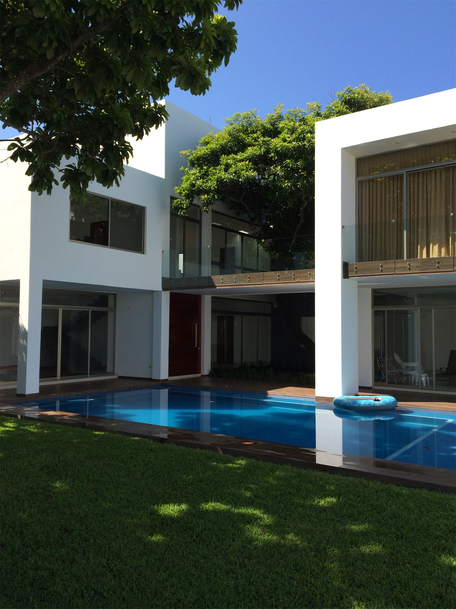

COTA
+0.00
VER
DESARROLLO Y CONSTRUCCIÓN
NOSOTROS
Grupo Tejaz es una empresa de desarrollo y construcción con sede en Veracruz. Trabajamos cada proyecto desde el diseño hasta la entrega, cuidando el detalle en cada etapa del proceso.
Construimos residencias, espacios comerciales y desarrollos de uso mixto. Calidad, cumplimiento y diseño a la medida en cada proyecto, con una relación cercana con cada cliente.

HACEMOS
Cuatro disciplinas, una sola dirección.
01
Residencial
Casas y desarrollos habitacionales diseñados a la medida.

02
Comercial
Espacios comerciales funcionales para el negocio de cada cliente.

03
Remodelación

04
Desarrollos inmobiliarios
Del terreno a la entrega de llaves, bajo una sola dirección.
OBRAS
04

PROYECTO REFORMA · 2021
PROYECTO COSTA VERDE · 2022
PROYECTO MALECÓN · 2023
PROYECTO ARBOLEDAS · 2024
01 / 04
Proyecto Reforma
Residencial · Veracruz, Ver. · 2021

MÁS
PROYECTOS ↗ VER LOS 21 PROYECTOS
PROYECTOS ↗ VER LOS 21 PROYECTOS
En dónde construimos
05 CIUDADES
OFICINA
Pinzón 1, Esq. Simón Bolívar, Fracc. Reforma, Veracruz, Ver.
Contáctenos